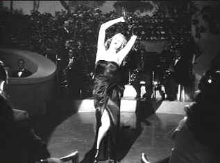

| Gilda/B,B- |
| Columbia/1946/113/FS
1.33/BW |
Gilda is one of those flicks that does quite measure up to its reputation. If it wasn't for
star Rita Hayworth in the title role, it would have bee no more than a typical B noir, but
Columbia's Pictures lady of the first order supplies a potent brew of distilled of sexual power in Gilda.
Hayworth’s lips are lubricated and painted with sexual strokes and her breathless vocal delivery
is but two steps away from the bedroom. It’s Hayworth’s picture all right.
 |
| Put the blame on the script.© Columbia |
The plotting and characters are trumped up noir figures mired in a hokey melodramatic plot.
Johnny Farrell is a down and out tough guy struggling to survive in a dirt water South American
coastal city. Farrell's two-day beard predates Euro-trash by four decades, but the swagger and dark
confidence are defining noir qualities. Powerful, effete Ballin Mundson owns the local casino.
Farrell impresses Mundson under unlikely circumstances and is hired to work the casino floors,
quickly becoming Mundson's right hand. Farrell dons a tux and protectively prowls the casino
where the police pick up pay-offs, playboys exercise their twinkle toes, and a corrupt haze casts a
questionable mist over the upscale glitz.
It's a pat and comfortable set-up for Farrell. With one swift punch he's
gone from the edge of destitution to a position of power. But an unexpected wild card turns up in
the pat hand. Mundson returns from a trip with a gorgeous bride in tow, Gilda. Farrell knows Gilda
all too well, but he doesn't let on to Mundson. You can smell the lingering of past sexual liaison
that fills the air whenever Johnny and Gilda are in the same room. It's only a matter of time
before the heat causes things to boil over. Add a Mundson side order of Nazi stench and Gilda
is complete.
You can’t deny Gilda has style. It's well shot by later director
Rudolph Maté. The strong atmosphere is filled realized by able actors. Hayworth is breathtaking.
Of the two musical numbers added for Hayworth after the first screening of the film, one is
forgettable and the other puts its stamp on Gilda with delicious polish. Put the Blame on
Mame lets Hayworth strut with sexual abandon, stopping short of a real striptease. Glenn Ford
is effective as Johnny Farrell and George Macready memorably slimy as
Mundson.
The transfer is okay; the source material limits it. Although Gilda
is part of a joint USC and Sony restoration, there are far too many frames speckled by dirt. A few
scenes go soft momentarily or waver from film shrinkage. Worse, there are several passages where a
fluttering hum disturbs the otherwise clean sound track. Good dynamic range in the contrast and
plenty of light output make the transfer look fresh. Shadow detail is very good; a necessity for
transferring noir, and key lighting is in good balance. A bonus of a Rita Hayworth featurette is
included featuring clips from a number of her earlier movies, but it lacks depth and ends with
jarring abruptness.
|
|
|
|

Selections from the Feature Archive
include articles on Akira Kurosawa, Frank
Darabont, Blonde Bimbos, Hollywood Street Gangs, or Vietnam: The
Hollywood Pariah, and many more....
Film noir: The phrase hangs awkwardly on the tongue,
shadowy images peek out from behind half-closed doors. Click on the Noir and Noir
Again symbol for a look into the dark spaces of Hollywood's revisiting of film noir.

Ghost Dog: Way of the Samurai

Ancient Japanese samurai tradition compared to new world Italian
mobsters filtered through the imagination of Jim Jarmusch. Forest Whitaker is outstanding.

The
Movie Poster Archive includes extensive poster images from the films of stars like Susan Hayward,
Kirk Douglas, Katharine Hepburn and many more. Our featured star is Richard Widmark.


DVDinsider is a daily
email publication targeting the DVD Industry Professional. The publication includes current news,
events, stock prices and more.

The Cinema Laser
A home grown magazine for laserphiles that has been publishing for a number of years and has
embraced DVD in a big way. Lots of helpful information.

DVD Reviews and more. The credo behind DVD Angle is "we cater to no one, and we call it as we
see it."
|